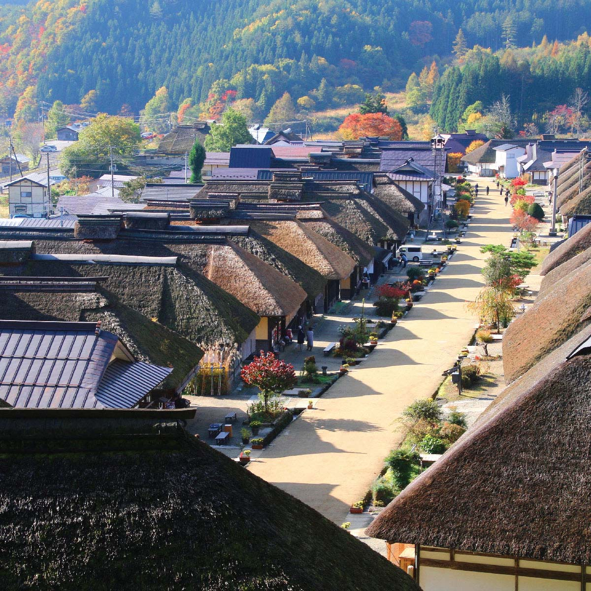
Ouchi Juku ฟุกุชิมะ
หมู่บ้านเก่าแก่ตั้งแต่สมัยเอโดะ หมู่บ้านโออุจิจุคุ (Ouchi Juku) สถานที่ท่องเที่ยวในญี่ปุ่นแบบย้อนยุค มีความโดดเด่นอยู่ที่สถาปัตยกรรมบ้านญี่ปุ่นแบบโบราณที่มุงหลังคาด้วยหญ้า เรียงรายขนาบข้างถนนหลัก ซึ่งสมัยก่อนเป็นที่พักแรมของผู้ที่เดินทางระหว่างอาณาจักร ปัจจุบันเป็นสถานที่ท่องเที่ยวที่มีทั้งร้านขายของ ร้านอาหาร ที่พักแบบโฮมสเตย์ หอนิทรรศการที่ให้ความรู้และจัดแสดงข้าวของเครื่องใช้ตามวิถีชีวิตผู้คนสมัยก่อน
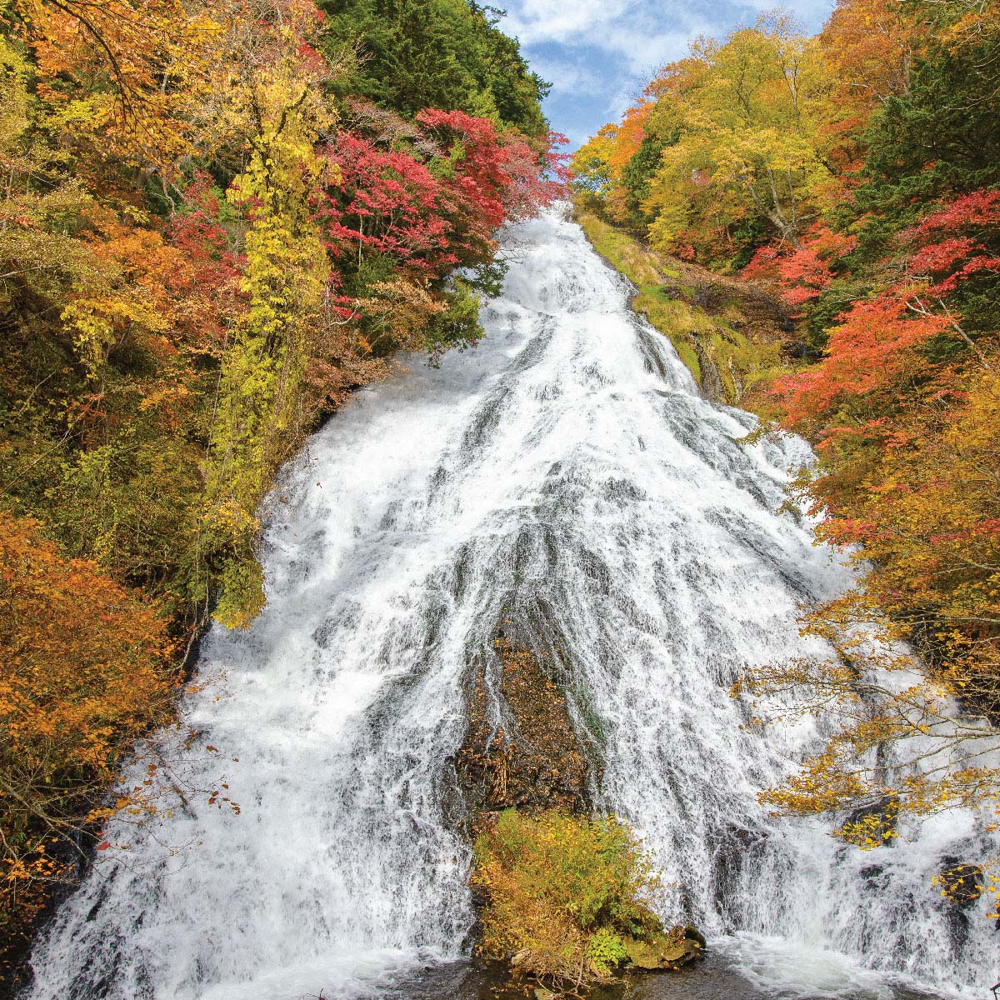
Sensoji Temple โตเกียว
สถานที่ท่องเที่ยวในญี่ปุ่นที่เหมาะสำหรับการมาพักผ่อนหย่อนใจที่แท้จริง น้ำตกยูทากิ (Yudaki Falls) น้ำตกที่ยิ่งใหญ่ตระการตาสุด ๆ มีความสูงถึง 50 เมตร โอบล้อมด้วยธรรมชาติที่สมบูรณ์ ดื่มด่ำบรรยากาศสดชื่นได้เต็มที่ มีเสน่ห์สวยงามตลอดทั้งปี มาเที่ยวได้ทุกฤดู ลำธารด้านล่างน้ำใสสะอาด แค่มองก็สงบ มีจุดสำหรับขออนุญาตตกปลาอยู่เป็นระยะ
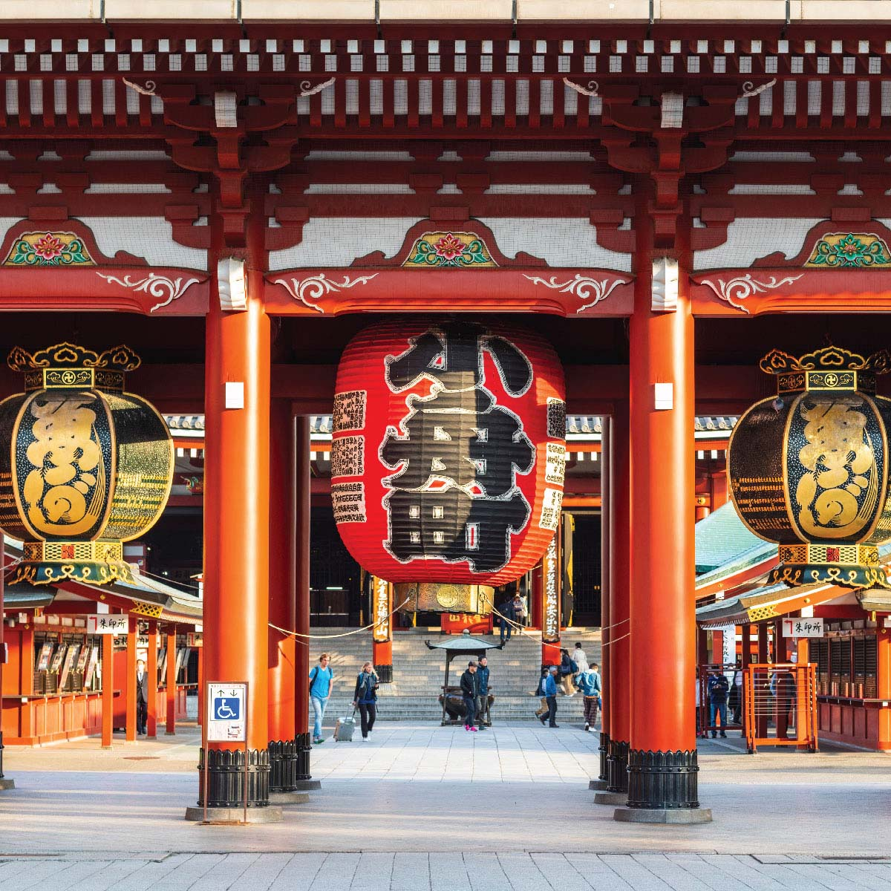
Sensoji Temple โตเกียว
สถานที่ท่องเที่ยวในญี่ปุ่นที่ต้องห้ามพลาดเด็ดขาด วัดเซนโซจิ (Sensoji Temple) หรือที่รู้จักกันดีในนาม วัดอาซากุสะหรือวัดโคมแดง วัดดังเก่าแก่แห่งโตเกียว มีโคมแดงใหญ่โดดเด่นเป็นสัญลักษณ์ที่ซุ้มประตูทางเข้า เมื่อเดินเข้ามาภายในจะเจอกับเจดีย์ 5 ชั้น ที่สวยงามอลังการ ก่อนกลับอย่าลืมกวักเอาควันธูปหน้าวัดเข้าหาตัว เชื่อว่าจะช่วยนำความโชคดีมาให้
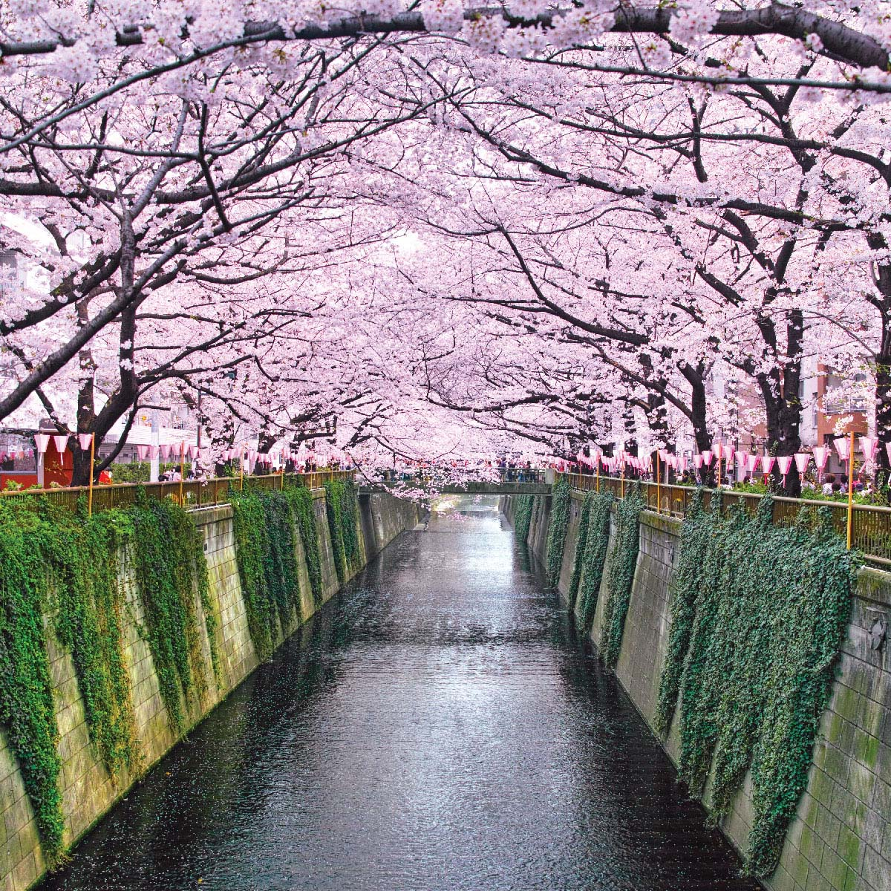
Meguro River โตเกียว
ครชอบดูดอกซากุระบานต้องมาที่ แม่น้ำเมกุโระ (Meguro River) จุดชมดอกซากุระบานยอดฮิตที่มีดอกซากุระโน้มกิ่งเรียงรายเป็นอุโมงค์ตลอดทาง ยิ่งในช่วงที่มีเทศกาลก็ยิ่งคึกคักเป็นพิเศษ มีการประดับไฟสวย ๆ จนถึง 3 ทุ่ม มีที่ให้นั่งชิลมากมาย มีร้านอาหารอร่อย ๆ เพียบ เรียกว่ามาได้ทั้งกลางวันและกลางคืน สวยฟินโรแมนติกสุด ๆ เป็นสถานที่ท่องเที่ยวในญี่ปุ่นที่มาแล้วรับรองไม่ผิดหวัง
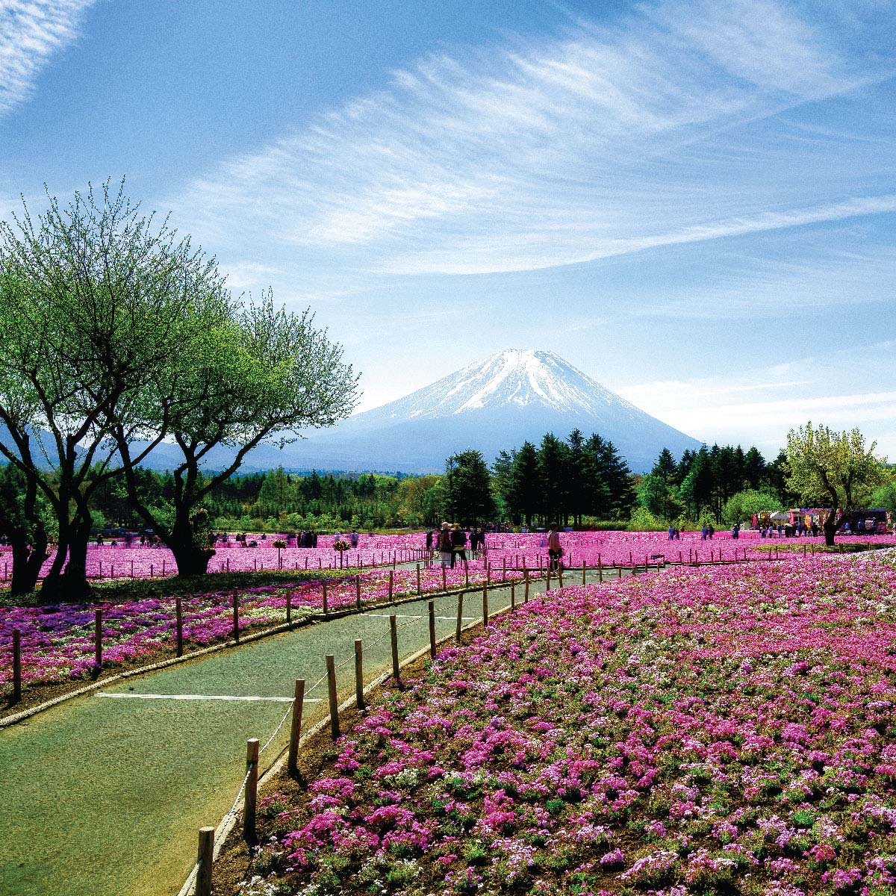
Fuji Motosuko Resort ยามานาชิ
ฟูจิโมโตสึโกะรีสอร์ท (Fuji Motosuko Resort) เป็นที่รู้จักกันดีของเทศกาลทุ่งดอกชิบะซากุระ Fuji Shibazakura Festival ที่มีชื่อเสียง โดดเด่นด้วยวิวงดงามที่ไม่เหมือนที่ไหน โดยเบื้องหน้าเป็นทุ่งดอกไม้สีชมพูบานสะพรั่งเต็มพื้นที่ เบื้องหลังเป็นฟูจิซังสูงตระหง่าน ตัดกับท้องฟ้าสดใส ถ่ายรูปมุมไหนก็สวย เดินกดชัตเตอร์ได้รัว ๆ เป็นสถานที่ท่องเที่ยวในญี่ปุ่นยอดฮิตที่ควรมาสัมผัสด้วยตัวเองอย่างยิ่ง
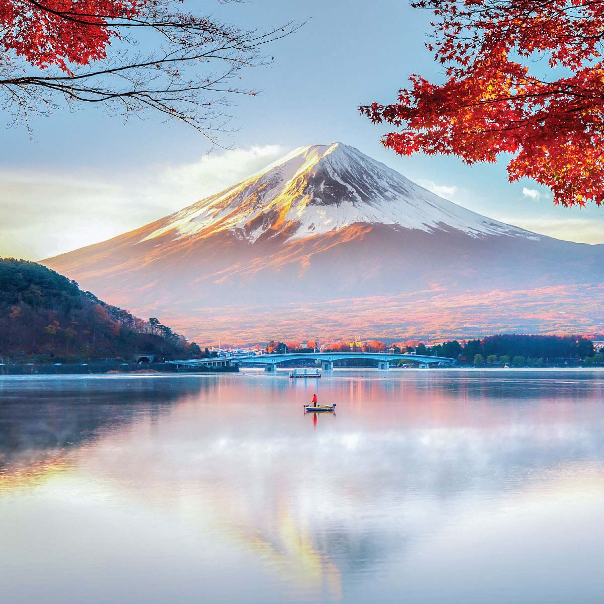
Lake Kawaguchiko ยามานาชิ
ทะเลสาบรอบภูเขาไฟฟูจินั้นมีอยู่หลายแห่ง แต่หนึ่งในทะเลสาบที่มีธรรมชาติอุดมสมบูรณ์และมีชื่อเสียงก็คือ ทะเลสาบคาวากุจิโกะ (Lake Kawaguchiko) เป็นสถานที่ท่องเที่ยวในญี่ปุ่นที่สามารถมองเห็นยอดภูเขาไฟฟูจิได้ชัดเจน แน่นอนว่าวิวทิวทัศน์สวยงามอลังการสุด ๆ บรรยากาศเย็นสบายตลอดปี การเดินทางสะดวก มีจุดชมดอกซากุระบานเพียบ คนรักธรรมชาติต้องมาให้ได้เลย
Snow Monkey Park (Jigokudani Yaen Koen) นากาโน่
สถานที่ท่องเที่ยวในญี่ปุ่นที่ขึ้นชื่อว่าเป็นแดนสวรรค์ของฝูงลิง สวนลิงหิมะจิโกคุดานิ Snow Monkey Park (Jigokudani Yaen Koen) ที่จะมีฝูงลิงแก้มแดงจากบนภูเขาลงมาแช่ออนเซ็นคลายหนาวให้ดูอย่างเพลิดเพลิน เห็นแล้วน่ารักน่าเอ็นดูสุด ๆ บรรยากาศโดยรอบก็สวยงามมาก ตลอดทางเดินเชิงเขาจะมีหิมะปกคลุมต้นสนจนขาวโพลน
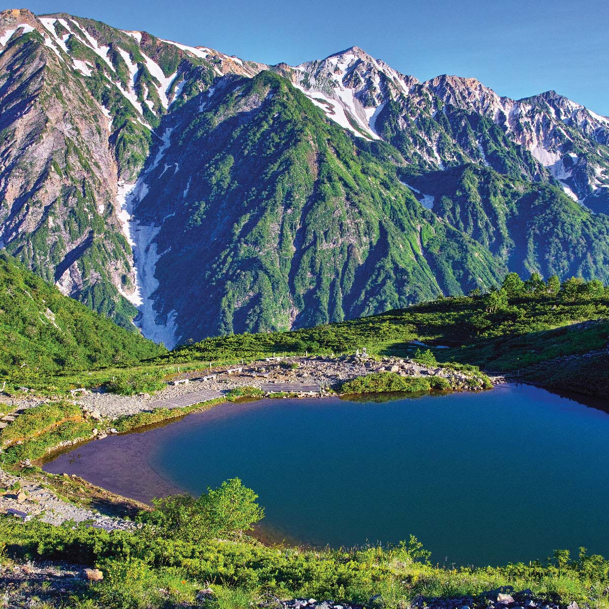
Happo pond นากาโน่
อีกหนึ่งสถานที่ท่องเที่ยวในญี่ปุ่นที่มีธรรมชาติสวยงาม ตั้งอยู่ภายในอุทยานแห่งชาติของนากาโน่ บึงฮัปโป (Happo Pond) เกิดจากการทับถมของดินทรายจากธรรมชาติ จนเกิดเป็นบึงน้ำใสที่โอบล้อมด้วยเทือกเขาเจแปนแอลป์ มีเสน่ห์น่าสัมผัสทุกฤดู ระหว่างเส้นทางธรรมชาติก็มีพืชพรรณนานาชนิด มองยังไงก็ไม่เบื่อ นอกจากนี้ยังมีกิจกรรมให้ทำอีกเพียบ
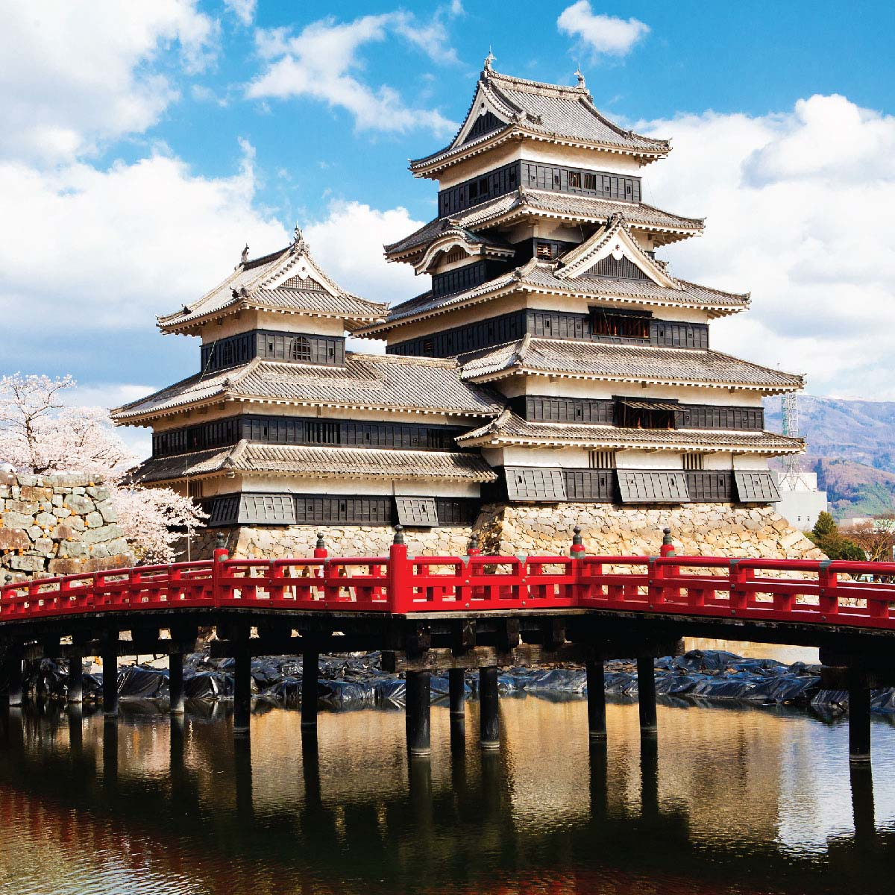
Matsumoto Castle นากาโน่
ปราสาทดั้งเดิมสุดยิ่งใหญ่ที่มีเอกลักษณ์โดดเด่นไม่เหมือนใคร ปราสาทมัตสึโมโตะ (Matsumoto Castle) หรือปราสาทอีกา ไฮไลต์สำคัญอยู่ที่ปราสาทสีดำแปลกตา ซึ่งเป็นสถาปัตยกรรมท้องถิ่นโบราณที่ยังคงสภาพสมบูรณ์และสวยงาม บริเวณโดยรอบโอบล้อมด้วยธรรมชาติที่งดงาม มีจุดให้ชมวิวชิล ๆ มากมาย
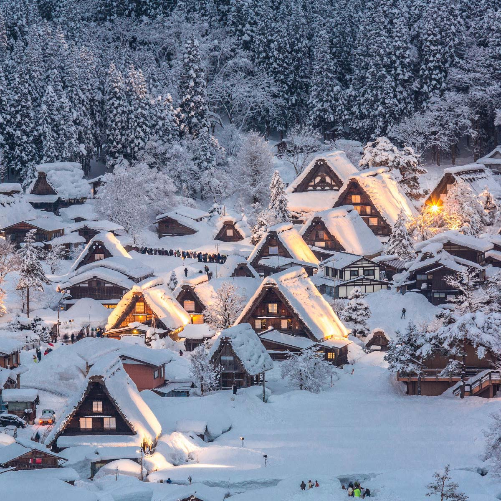
Shirakawa-go กิฟุ
รียกว่าเป็นหมู่บ้านแห่งวัฒนธรรมอันทรงคุณค่าเลยก็ว่าได้ สำหรับ หมู่บ้านชิราคาวาโกะ (Shirakawa-go) หรือเรียกง่าย ๆ ว่าหมู่บ้านหลังคาโบราณ ตั้งอยู่ท่ามกลางเทือกเขาธรรมชาติ ได้รับการขึ้นทะเบียนให้เป็นมรดกโลกทางวัฒนธรรม โดยมีไฮไลต์เด็ดอยู่ที่บ้านทรงกัชโชสึคุริ ที่ทำจากวัสดุธรรมชาติทั้งหลัง
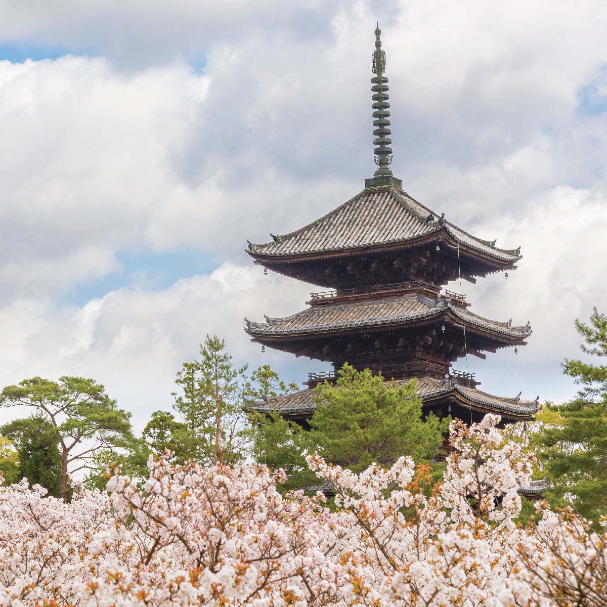
Ninna-ji Temple เกียวโต
มาเกียวโตทั้งที ต้องแวะมาสถานที่ท่องเที่ยวในญี่ปุ่นแห่งนี้ให้ได้ วัดนินนาจิ (Ninna-ji Temple) วัดสำคัญที่ได้รับการถูกบันทึกเป็นมรดกโลก ไฮไลต์ที่ไม่ควรพลาดคืออาคารโกเท็น สถาปัตยกรรมแบบเดียวกับพระราชวังอิมพีเรียล มีการตกแต่งเรียบหรู อลังการ สวยสง่างาม
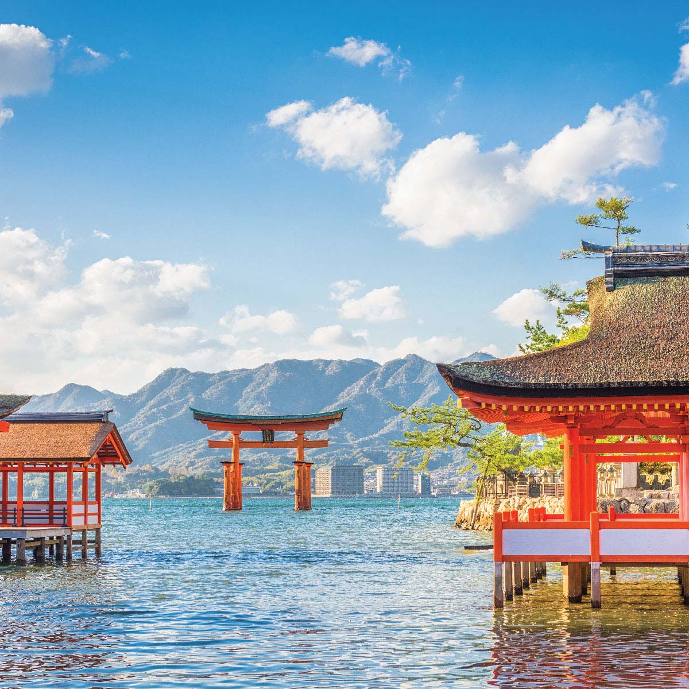
Itsukushima-jinja Shrine ฮิโรชิม่า
สถานที่ท่องเที่ยวในญี่ปุ่นบนเกาะที่ขึ้นชื่อว่าเป็นเกาะเทพเจ้า ศาลเจ้าอิสึคุชิมะ (Itsukushima-jinja Shrine) ศาลเจ้าศักดิ์สิทธิ์ที่ได้รับการขึ้นทะเบียนเป็นมรดกโลกของยูเนสโก มีความโดดเด่นอยู่ที่เสาโทริอิสีแดง สูง 16 เมตร กว้าง 24 เมตร เชื่อว่าเป็นประตูเชื่อมระหว่างโลกมนุษย์และโลกวิญญาณ
{kind=link}
{kind=link}
{kind=link}
{kind=link}
{kind=link}
{kind=link}
{kind=link}
{kind=link}
{kind=link}
{kind=link}
{kind=link}
{kind=link}